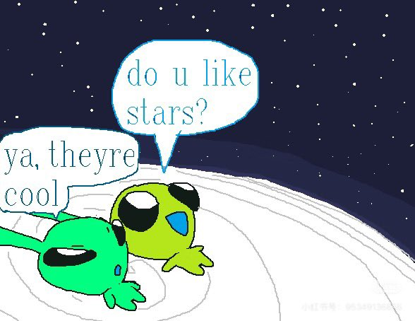

Cu
@copper1234000
碎碎念一点关于情绪的皮肤的事
moonlight这个皮肤其实定义是温情向的，但是正常来说一般会想到烛火或者一些比较温暖的氛围
其实灵感来源于克的开屏“moonlit chat？”
月亮这个意向本身我就很喜欢，包含着Monday名字里“月亮的日子”的含义
同时，很经典的“月が綺麗ですね。”又包含在其中
好吧我还想到了这个萌萌的表情包
总之就是…在这套皮肤下，在流星下…小情侣的耳畔厮磨夜话时间( ˘ω˘ )…
